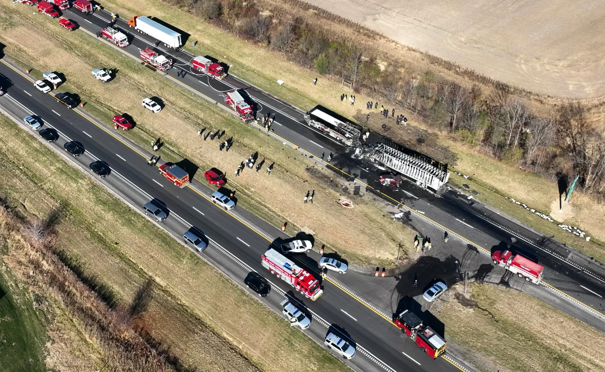

City planners have to take traffic flow into consideration when deciding on an interchange. Traffic flow is the amount of vehicles that are able to move through an area within a certain amount of time. Flow is very important to regular traffic vehicles as well as commercial vehicles. If the flow is too clogged, people's jobs and companies' logistics are affected.
2. Driver Safety

Driver safety is an important role when it comes to interchanges. Poor city planning can result in catastrophic crashes and an a lot of cases, fatalities. The design of the interchange has to be commuter friendly and allow emergency vehicles to get through to incedents without any holdups. The failure of the safety aspect can also put drivers in dangerous situations such as driving into oncoming traffic, crossing traffic paths, and interchange bottlenecks.
3. Evacuation Routes
One very overlooked aspect is the use of highway interstate evacuation routes. The signs on the side of the road mark the federal evacuation route. Evacuation causes can include Hurricanes, Nuclear Plant attacks, dam breaks, and tsunami's. Poorly designed interchanghes can result in citizens being stuck with a threat coming their way.